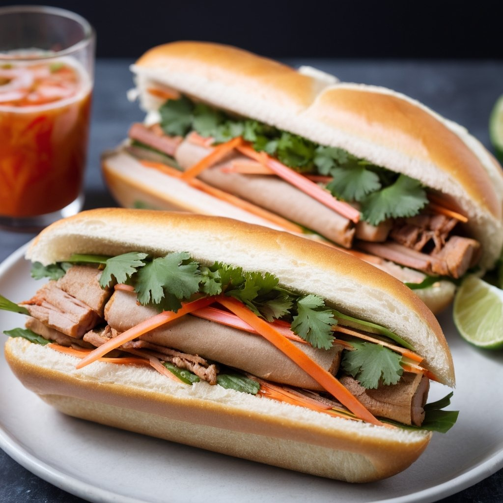

All information on this page is taken from https://eatingrichly.com/vietnamese-sandwich-recipe-grilled-chicken/
This Vietnamese sandwich recipe is an authentic grilled chicken banh mi packed with exciting flavors, colors and textures. And it’s SO easy to make!
One thing I love about this Vietnamese sandwich recipe, is the versatility of the sauce. You can use the sauce as a marinade before grilling the chicken. But you can also toss already grilled strips of chicken with the sauce! It’s a great way to use leftover chicken, or to save time with store bought chicken. Sometimes I will buy the pack of Costco grilled chicken breast strips, and just toss the banh mi sauce in one of the bags so I can make sandwiches throughout the week. The quick pickle is super easy to make, and can be used immediately, or kept in the fridge for using whenever you’re craving a Vietnamese sandwich.
INGREDIENTS
PICKELED VEGGIES
SANDWICH FIXINGS
If you would like to make this recipe with chicken that is already cooked, it's easy to adapt. Just cut the amount of marinade ingredients in half. The toss the cooked, sliced chicken in a bag with the marinade.
For the carrot and radish pickle, the easiest way to get julienne strips is by using a julienne peeler. Here's our favorite julienne peeler.